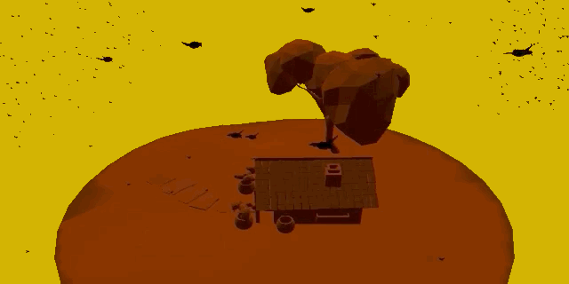
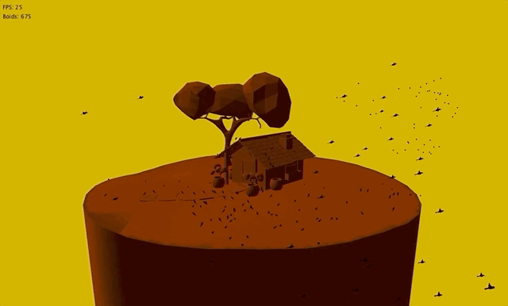
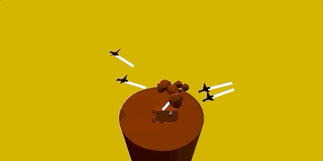
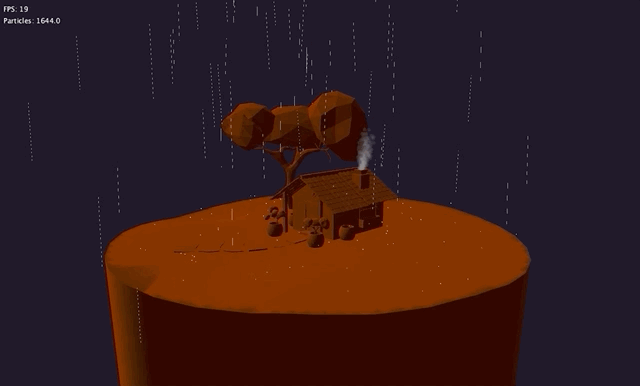

This is an implementation of a particle system and boids algorithm. The focus of my implementation was to provide the user with a system for configuring causal interation. This was done by accounting for collisions and providing an outlet class to resond to such collisions. Each particle system can have its own CollisionTrigger that acts in response to each particle collision with a set of rigidbodies. In my case, I used this for a rain Simulation to spawn a splash effect when the rain hits the ground. Each collision can respond by spawning its own particle system. This can be done recursively, giving artists the option to make infinite particle system loops. Below is the source code.
All models were generated in Blender. I found the site ScratchAPixel helpful for implementing collision detection and raycasting. Conrad Parker's notes on the Boids algorithm also proved useful.
For the boids algorithm, I followed a standard implementation with the three rules: match the flocks velocity, avoid others, and fly towards the center of mass. I wanted to make sure the birds could break off into smaller groups, so I added a test for the distance between each bird, so only birds close enough to each other could be affected by one another. I also added a fourth rule: fly towards the tether. This allowed me to prevent the birds from flying too far away from the camera, and also allowed for some interesting interaction. Lastly, I added collision detection for each bird, so they could perch themselves on a surface when they intersect it.
To interact with the birds, you can click on the mesh, and a scarecrow will appear and the birds will swarm. These birds aren't scared of no crow! It's more of a revenge of the birds thing.
Other than the tether point, and a bounding box to keep the flock together, I wanted the birds to interact with the environment. When they ground or the trees, or the roof of the house, they will check for collision. If a bird collides, they will land, and the bird's model will be switched out with a perched bird model. It's interesting to watch as the birds land, then take off again. Sometimes they will land, then fly for only a brief moment before landing again, as if they are searching for worms.
The birds are also always oriented towards their flight path. Because birds will "soar" they will usually be facing forward even if they are dropping altitude. For this reason, the birds orientation is only altered along the Y axis. Their velocities are also reduced in the Y direction to encourage the "soaring" effect.
You can toggle to the rain sim by pressing SPACEBAR. The rain simulation uses a recursive particle emitter system that lets the designer add child emitters whenever a collision occurs. Particles can be rendered as textures, or points. Because I was making a stylized rain simulation, I wanted to also add the ability to "streak" the particle along its path. The chimney on the house illustrates the use of a textured particle emitter.
One thing that kept coming up was collision detection error. I actually use a decimated mesh for collision detection to reduce the number of triangles I need to check for intersection. Also, in order to improve render speeds, if a bird is greater than a certain distance from the camera, they are rendered as points instead of meshes. This did not yield big improvements (maybe 2-3 fps), so it might be better to switch back in the future. Deciding how to organize the Particle and Boid classes also proved difficult because I wanted to make them simple to get started, but extensible.
The flocking sim yields about 30-40 fps on my Macbook Pro 2016, and the rain sim slightly worse. The flocking sim has 675 birds altogether, and the particle simulation has 1000-2000 particles drawn at a time. Rendering the smoke in the chimney is the most expensive part of the rain sim. I had a hard time capturing the frame rate, because when I used the video capture tool, my frame rate would suddenly drop. I did take a picture here:

At :13, I demonstrate placing a scarecrow to attract birds. Throughout the video, I orbit the view by using the arrow keys. At :35 I press SPACEBAR to open the rain simulation.